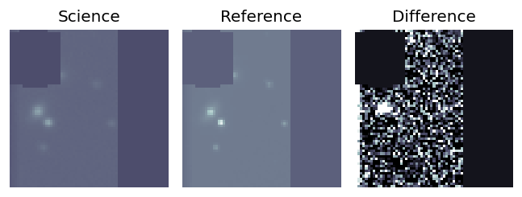
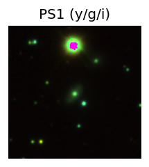
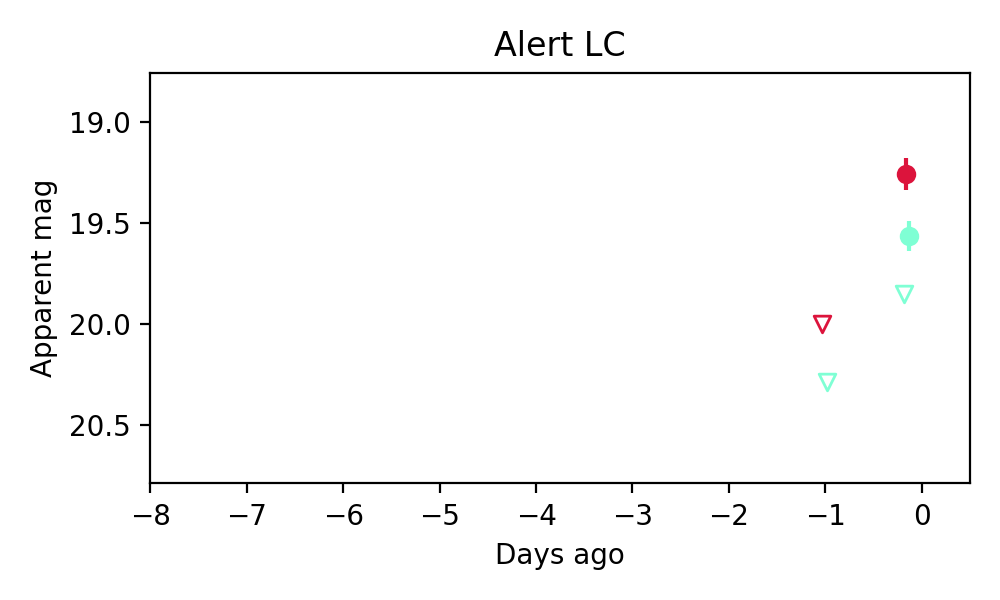
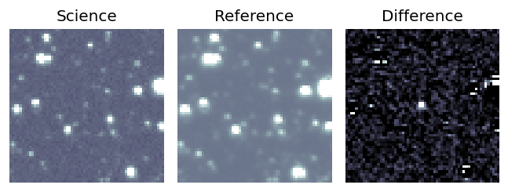
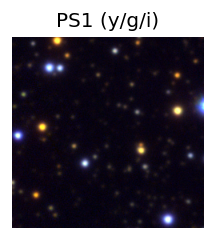
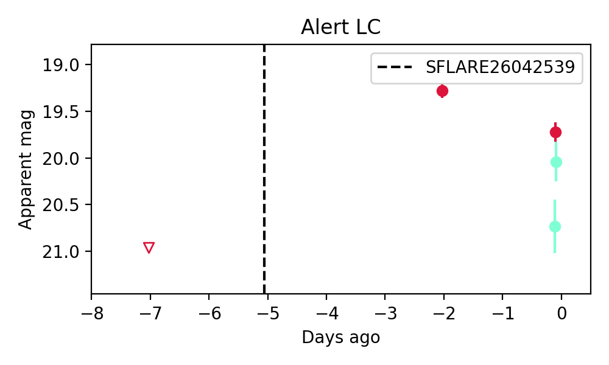
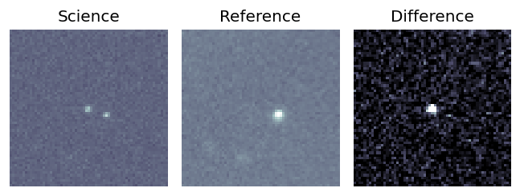
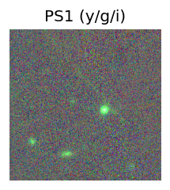
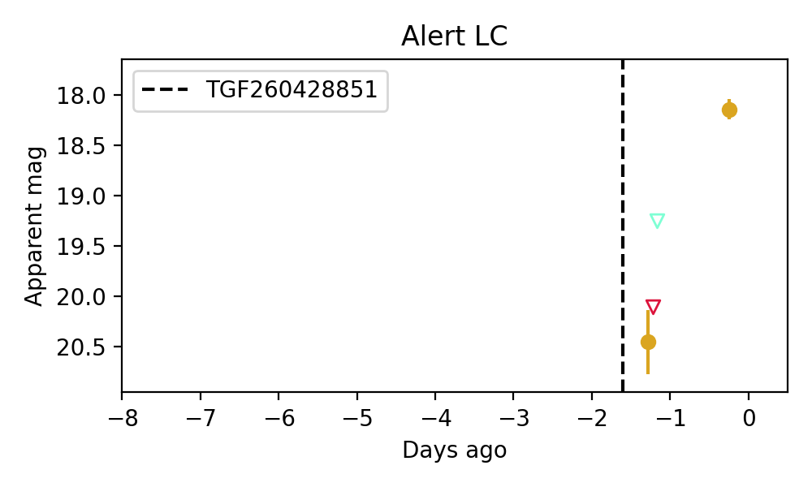

Candidate List 20260430Previous Day Next Day
Section 1: New Sources (age<1d) Section 2: Old (1-5d) sources observed last nightplaceholder
Section 1: New Afterglow/FBOT Cands Last Night (1)
1. ZTF26aauokre (Afterglow?) [Back to Top] [Share] [Trigger Swift] [Fritz] [Lasair]RA, Dec: 276.16878, 25.57622 18h24m40.51s, 25d34m34.39sGalactic (l, b): 53.5074, 16.881 ext(g-r) = 0.102

TESS: Sectors [ 74 118 119]
PS1: 1 source in 3 arcsec Closest: d = 1.35 arcsec photoz=0.06+/-0.00 peak abs mag = -18.05
LegacySurvey: 0 sources in 3 arcsec

Extinction-corrected gr color:
From alerts: 0.21 +/- 0.11 mag
Consistent with synchrotron, g-r>0!
Rise Rate:
g: 5.54 mag/day
r: 0.86 mag/day
i: -99 mag/day
Fade Rate:
g: -99 mag/day
r: -99 mag/day
i: -99 mag/day
Section 2: Older Sources Observed Last Night (5)
0. ZTF26aauiwxl (FBOT?) [Back to Top] [Share] [Trigger Swift] [Fritz] [Lasair]RA, Dec: 254.48345, -1.73815 16h57m56.03s, -1d-44m-17.33sGalactic (l, b): 17.44927, 24.1387 ext(g-r) = 0.261


TESS: Sectors 117
PS1: 1 source in 3 arcsec Closest: d = 0.56 arcsec photoz=0.24+/-0.03 peak abs mag = -21.71
LegacySurvey: 0 sources in 3 arcsec

Extinction-corrected gr color:
From alerts: 0.14 +/- 0.25 mag
Extinction-corrected gi color:
From alerts: 0.83 +/- 99 mag
Extinction-corrected ri color:
From alerts: 0.18 +/- 99 mag
Consistent with synchrotron, g-r>0!
Rise Rate:
g: 0.24 mag/day
r: 0.25 mag/day
i: -99 mag/day
Fade Rate:
g: -99 mag/day
r: -99 mag/day
i: -99 mag/day
1. ZTF26aaujhfr (Afterglow?) [Back to Top] [Share] [Trigger Swift] [Fritz] [Lasair]RA, Dec: 292.29089, 12.82746 19h29m9.81s, 12d49m38.84sGalactic (l, b): 48.63633, -2.34773 ext(g-r) = 1.548

TESS: Sectors [54 81]
PS1: 0 sources in 3 arcsec
LegacySurvey: 0 sources in 3 arcsec

Extinction-corrected gr color:
From alerts: -0.99 +/- 0.2 mag
Rise Rate:
g: 0.14 mag/day
r: 0.34 mag/day
i: -99 mag/day
Fade Rate:
g: -99 mag/day
r: 0.23 mag/day
i: -99 mag/day
2. ZTF26aaulhci (FBOT?) [Back to Top] [Share] [Trigger Swift] [Fritz] [Lasair]RA, Dec: 153.06439, 9.28252 10h12m15.45s, 9d16m57.07sGalactic (l, b): 230.68257, 48.45274 WARNING: -1.71 deg from ecliptic plane ext(g-r) = 0.033


TESS: Sectors [45 46 72]
SDSS (10 arcsec):Found SDSS phot-z: z=0.12; peak abs mag = -20.47
PS1: 0 sources in 3 arcsec
LegacySurvey: 1 sources in 3 arcsec Closest: d = 3.60 arcsec, 46.7 deg (east of north) photoz=0.47 (68% bounds 0.38, 0.65), type=PSF peak abs mag = -23.79 (68% bounds -23.2, -24.63)

Extinction-corrected gr color:
From alerts: -0.23 +/- 0.1 mag
Extinction-corrected gi color:
From alerts: -0.44 +/- 0.11 mag
Extinction-corrected ri color:
From alerts: -0.21 +/- 0.11 mag
Rise Rate:
g: 0.32 mag/day
r: 0.25 mag/day
i: 0.3 mag/day
Fade Rate:
g: -99 mag/day
r: -99 mag/day
i: -99 mag/day
3. ZTF26aaumolp (Afterglow?) [Back to Top] [Share] [Trigger Swift] [Fritz] [Lasair]RA, Dec: 253.19586, 68.0844 16h52m47.01s, 68d 5m3.85sGalactic (l, b): 99.30618, 35.97484 ext(g-r) = 0.041


TESS: Sectors [ 14 15 16 17 18 19 20 21 22 23 24 25 26 40 41 47 48 49
50 51 52 53 54 55 56 57 58 59 60 73 74 75 76 76 77 78
79 80 81 83 84 85 86 117 118 119 120 121]
PS1: 0 sources in 3 arcsec
LegacySurvey: 1 sources in 3 arcsec Closest: d = 3.86 arcsec, 198.6 deg (east of north) photoz=0.33 (68% bounds 0.28, 0.37), type=EXP peak abs mag = -21.4 (68% bounds -21.04, -21.72)

Extinction-corrected gr color:
From alerts: -0.14 +/- 0.24 mag
Consistent with synchrotron, g-r>0!
Rise Rate:
g: 0.59 mag/day
r: 0.32 mag/day
i: -99 mag/day
Fade Rate:
g: -99 mag/day
r: -99 mag/day
i: -99 mag/day
4. ZTF26aaunyvs (FBOT?) [Back to Top] [Share] [Trigger Swift] [Fritz] [Lasair]RA, Dec: 130.71964, 16.9 8h42m52.71s, 16d53m59.99sGalactic (l, b): 209.22294, 32.03917 WARNING: -1.25 deg from ecliptic plane ext(g-r) = 0.02

TESS: Sectors [44 45 46 72]
SDSS (10 arcsec):Found SDSS phot-z: z=0.45; peak abs mag = -23.92
PS1: 0 sources in 3 arcsec
LegacySurvey: 1 sources in 3 arcsec Closest: d = 1.08 arcsec, 109.2 deg (east of north) photoz=1.01 (68% bounds 0.61, 1.39), type=PSF peak abs mag = -26.05 (68% bounds -24.68, -26.89)

Extinction-corrected gi color:
From alerts: -1.23 +/- 99 mag
Extinction-corrected ri color:
From alerts: -0.36 +/- 99 mag
Rise Rate:
g: -99 mag/day
r: -99 mag/day
i: 2.25 mag/day
Fade Rate:
g: -99 mag/day
r: -99 mag/day
i: -99 mag/day